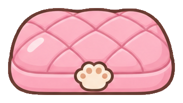
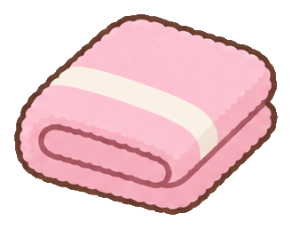
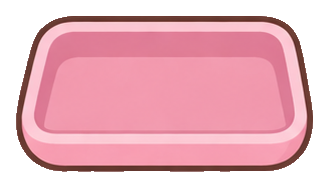

בוחרים ציפורן
לחצי על אחת מארבע הציפורניים של פופה.


בחרי ציפורן לטיפול מקרוב

0 מתוך 4 ציפורניים יבשות

הציפורניים של פופה, בעיצוב שלך!
מסדרים את פינת הטיפוח…
לחצי על אחת מארבע הציפורניים של פופה.


בחרי ציפורן לטיפול מקרוב

0 מתוך 4 ציפורניים יבשות